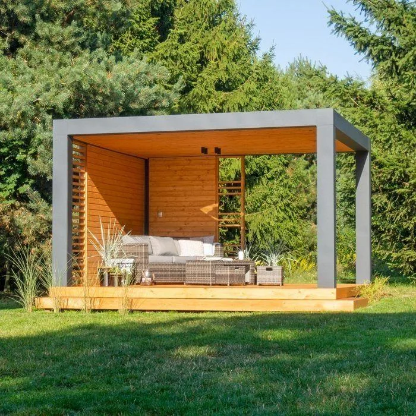
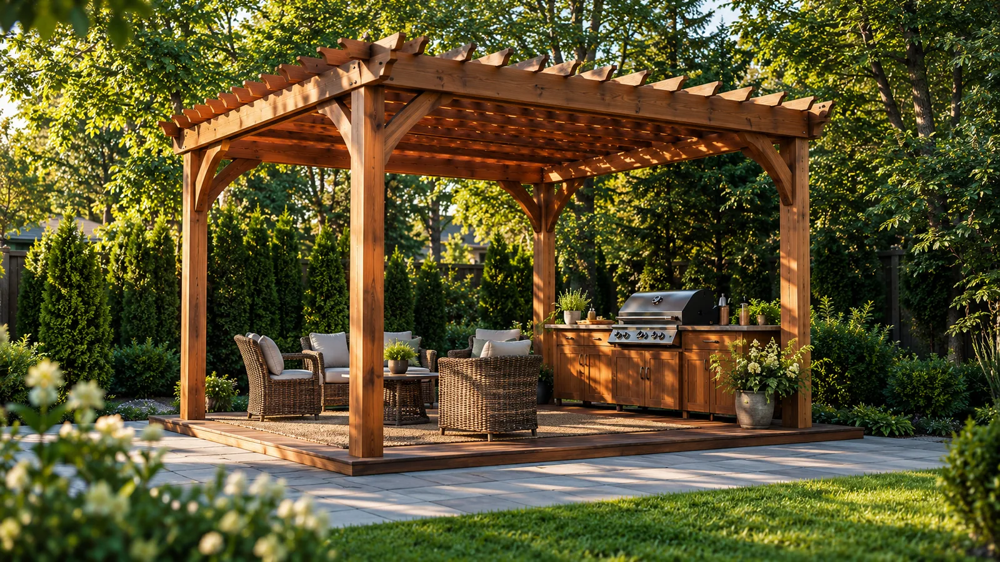
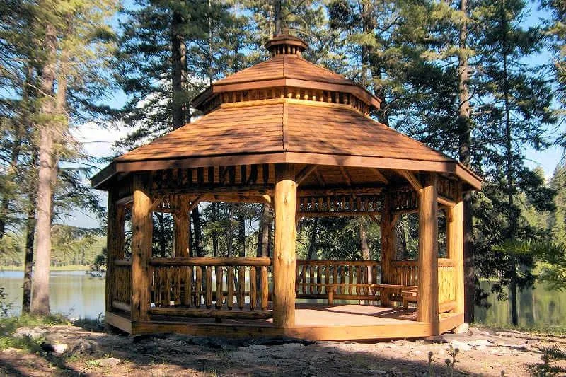
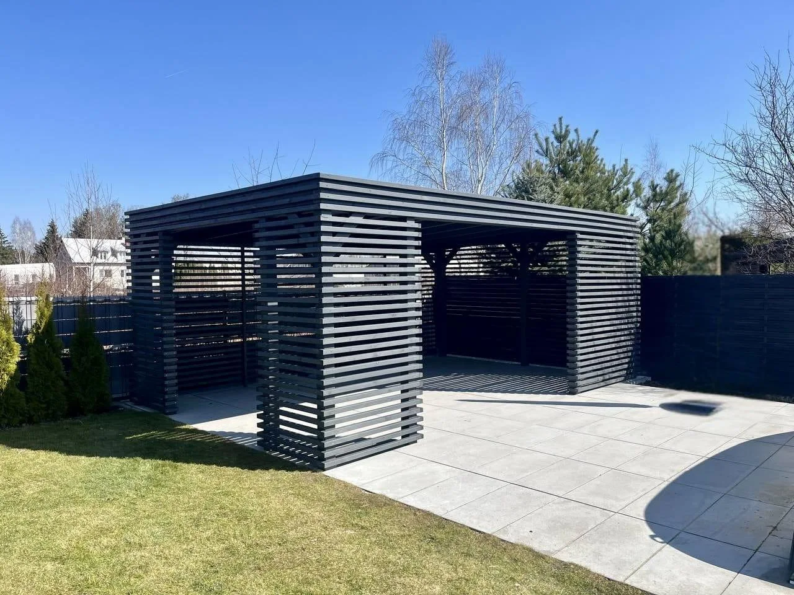
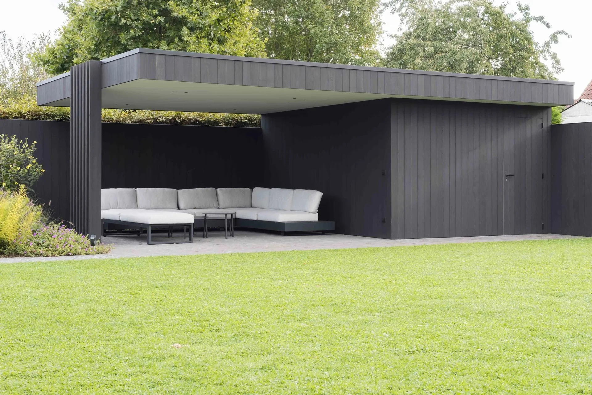
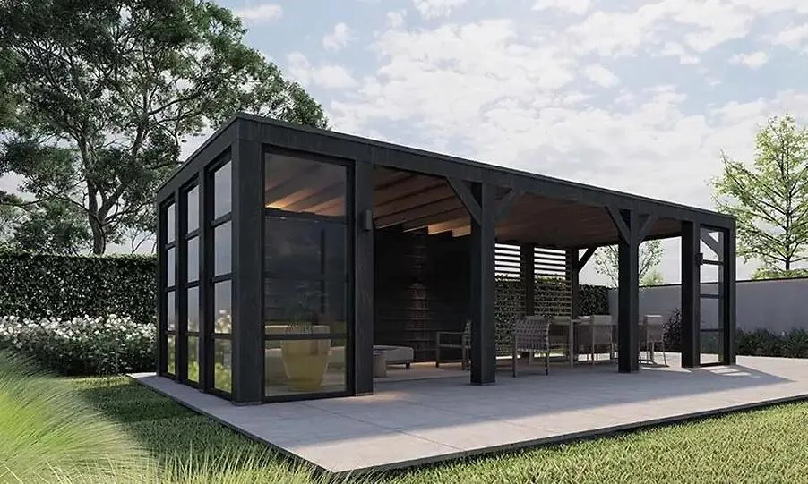

01 / KORTÁRSLETISZTULT VONALAK · TERMÉSZETES MELEGSÉG
Kint is
otthon.
Modern kerti pavilon
A fa meleg tónusa és az antracit keret határozott vonalai. Egy önálló kis világ, mégis a kert természetes része.
Hasonlót képzeltem el
TERMÉSZETES ANYAG. MARADANDÓ ÉRTÉK.
Egyedi pavilonok, rönkszerkezetek
és ácsmunkák országosan.
EGYEDI FASZERKEZETEK
A természetes fa karakterét modern és hagyományos ácsmunkával formáljuk térré.
Egy csendes kerti zugtól a közös pillanatok tágas helyszínéig. Olyan szerkezetekben gondolkodunk, amelyek a környezetükhöz és az életéhez is illenek.
Ismerje meg a szemléletünketVÁLOGATOTT MUNKÁK
A FA EZER ARCA / 01—03
01 / KORTÁRSLETISZTULT VONALAK · TERMÉSZETES MELEGSÉG
Modern kerti pavilon
A fa meleg tónusa és az antracit keret határozott vonalai. Egy önálló kis világ, mégis a kert természetes része.
Hasonlót képzeltem el
02 / HAGYOMÁNYRÖNKFA · IDŐTLEN KARAKTER
Hagyományos rönkpavilon
Karakteres oszlopok, gondosan ácsolt részletek. Egy hely, ahol jó leülni, beszélgetni, és egy kicsit tovább maradni.
Ilyen helyet szeretnék
03 / RITMUSFÉNY · ÁRNYÉK · PRIVÁT TÉR
Lamellás antracit pavilon
A vízszintes lamellák megszűrik a fényt és finoman határolják a teret. Nyitottság és elvonulás, egyensúlyban.
Beszéljünk a részletekrőlKÜLÖNBÖZŐ STÍLUSOK. AZONOS IGÉNYESSÉG.
A modern, letisztult pavilonoktól a karakteres rönkszerkezetekig minden projektet a helyszínhez és az igényekhez tervezünk.

AMIT FÁBÓL MEGÁLMODHAT
Kis kerti menedék vagy nagyobb léptékű szerkezet.
Egyedi megoldásban gondolkodunk.

Nyitott és zárt kerti terek, minden évszakhoz.
Természetes formák, rusztikus részletek.
Terasz- és bejárati előtetők, fa garázsok.
A fotó a faszerkezeti megoldások hangulatát mutatja.
Pergolák, rönkházak és méretre tervezett ácsmunkák.
ANYAGISMERET. ARÁNYÉRZÉK. ÁCSMUNKA.
A fa sosem teljesen egyforma. Erezete, árnyalata, karaktere minden szerkezetnek saját történetet ad. Mi ebből indulunk ki.
Valódi faanyaggal, egyedi méretezéssel, hagyományos és modern ácskötésekkel dolgozunk. A szerkezetet a helyszínhez igazítjuk, az első gondolattól a kivitelezésig.
AZ ELKÉPZELÉSTŐL A MEGVALÓSÍTÁSIG
Megismerjük az elképzelését, a helyszínt és azt, hogyan használná az új teret.
Egyeztetjük a formát, a méreteket, az anyagokat és a kivitelezés részleteit.
Kiválasztjuk és előkészítjük a szerkezethez illő faanyagot, a részletekre figyelve.
A megbeszélt tervek mentén felépítjük azt, amit közösen elképzeltünk.
MINDEN SZÉP SZERKEZET EGY BESZÉLGETÉSSEL KEZDŐDIK.
Mondja el, milyen szerkezetet szeretne,
és egyeztessünk a lehetőségekről.